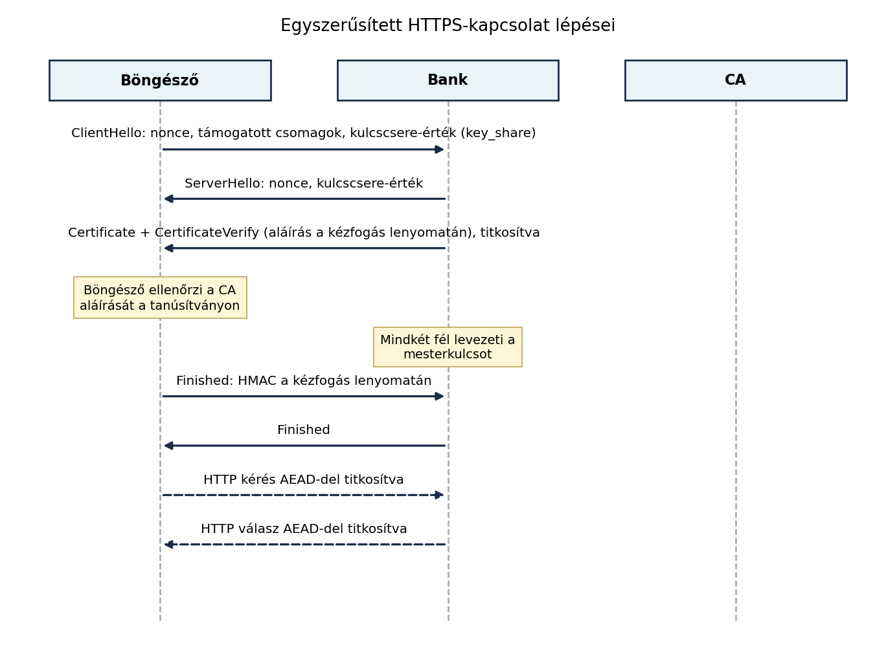

Amikor beírod a bankod címét a böngészőbe, és megjelenik a lakat ikon, a háttérben néhány tizedmásodperc alatt több kriptográfiai primitív dolgozik együtt. A felhasználó csak egy „biztonságos kapcsolatot” érzékel, pedig a teljes folyamat egy gondosan megtervezett protokoll-lánc: kulcsmegállapodás, digitális aláírás, tanúsítvány-ellenőrzés, hitelesített titkosítás és hash-függvények. Ebben az alfejezetben ezt a folyamatot bontjuk elemeire, anélkül hogy a TLS részleteibe merülnénk. A cél egy mentális térkép, amelyre a későbbi fejezetek – elsősorban az A TLS 1.3 kézfogás – ráépülnek.
A kérdés nem csak az, hogyan titkosít egy böngésző. Sokkal fontosabb az a rendszerszemlélet, ahogyan a különböző kriptográfiai építőkövek együttműködnek: a nyilvános kulcsú kriptográfia megoldja a kulcselosztást, a tanúsítvány és az aláírás megoldja a hitelességet, a szimmetrikus AEAD pedig a nagy tömegű adatforgalom védelmét. Ezt a hármas tagozódást érdemes először megérteni; a többi fejezet ezt a képet finomítja.

A fenti ábra egy leegyszerűsített TLS-kézfogást mutat. A böngésző első üzenete jelzi a támogatott kriptográfiai algoritmusokat, egy véletlen nonce-t és a saját kulcscsere-értékét. A bank válasza kiválasztja a használandó csomagot, elküldi a saját nonce-ját és kulcscsere-értékét; ezután (már titkosítva) a tanúsítványát, valamint egy aláírást, amelyet a tanúsítványban szereplő nyilvános kulcsnak megfelelő titkos kulccsal készít az eddigi kézfogás teljes lenyomatán (ez a kulcscsere-értékeket is tartalmazza; TLS 1.2-ben még csak a kulcscsere-paramétert írta alá). A böngésző ellenőrzi a tanúsítványt, azaz meggyőződik arról, hogy a nyilvános kulcs valóban a bankhoz tartozik, és az aláírás érvényes. Ezután mindkét fél ugyanazt a mesterkulcsot származtatja le, majd egy, a kézfogás lenyomatát hitelesítő ellenőrző üzenettel (Finished) nyugtázza, hogy a kézfogás sikeres volt. A tényleges HTTP-forgalom ezután már szimmetrikus AEAD-del védett.
A HTTPS-kapcsolat egyik központi tervezési elve a hibrid titkosítás. A nyilvános kulcsú kriptográfia (például Diffie–Hellman vagy RSA) kényelmesen megoldja a kulcselosztás problémáját, hiszen a feleknek nem kell előzetesen megosztott titkot birtokolniuk. Ugyanakkor az aszimmetrikus műveletek matematikailag drágák, ezért nagy adatmennyiség közvetlen titkosítására alkalmatlanok. A szimmetrikus rejtjelek viszont rendkívül gyorsak, de feltételezik, hogy a felek már megosztoztak egy titkos kulcson. A kettőt tehát úgy kombináljuk, hogy mindegyik a maga erősségét adja.
Definíció. Hibrid titkosításnak nevezzük azt a szerkezetet, amelyben egy nyilvános kulcsú primitív (kulcsmegállapodás vagy kulcsbeágyazó mechanizmus, KEM) létrehoz egy rövid, friss, véletlenszerű mesterkulcsot, a tényleges adatokat pedig egy hatékony szimmetrikus séma, jellemzően hitelesített titkosítás (AEAD) védi ezzel a mesterkulccsal.
Továbbvitt eredmény. A hibrid szerkezet általános kezelését az ElGamal-titkosítás, hibrid titkosítás és a KEM/DEM szerkezet alfejezetben tanuljuk meg, a TLS-beli konkrét megvalósulást pedig az A TLS 1.3 kézfogás alfejezet mutatja be.
A HTTPS esetén a nyilvános kulcsú rész általában egy Diffie–Hellman-típusú kulcscsere: mindkét fél generál egy rövid életű kulcspárt, kicseréli a nyilvános részt, majd egy közös titkot számít. Ez a közös titok még nem közvetlenül használható kulcsként, hanem egy hosszabb kulcsszármaztatási folyamat bemenetéül szolgál; ebből készül a mesterkulcs, majd abból a forgalmi kulcsok. A szimmetrikus rész a handshake után a HTTP-tartalmat védi, például AES-GCM vagy ChaCha20-Poly1305 segítségével. Ezek az AEAD-konstrukciók egyszerre biztosítanak titkosságot és integritást: a támadó nem tudja elolvasni az adatot, és nem tudja észrevétlenül módosítani sem.
Nézzük végig konkrétan, milyen primitívek lépnek működésbe, amikor a
böngésződ megnyitja a bank.hu oldalt.
Kapcsolatfelvétel. A böngésző TCP-kapcsolatot létesít a bank szerverével, majd elküldi a TLS ClientHello üzenetét. Ez tartalmaz egy véletlen nonce-t és a támogatott kriptográfiai csomagok listáját. A véletlenség itt kulcsszerepet játszik: megakadályozza, hogy a régebbi kapcsolatok üzeneteit újrajátszhassák.
Szerverválasz és tanúsítvány. A bank elküldi a ServerHello-t, benne a saját nonce-jával, a kiválasztott algoritmusokkal és a kulcscsere-értékével (például egy X25519 nyilvános értékkel). A további üzenetek már a kézfogási kulcsokkal titkosítottak: a Certificate üzenet a bank tanúsítványát tartalmazza (a bank nyilvános kulcsát és a hitelesítésszolgáltató, a CA digitális aláírását), a CertificateVerify pedig a bank aláírása az eddigi kézfogás lenyomatán, amely mindkét kulcscsere-értéket tartalmazza. Ez az aláírás a hitelességet szolgálja: a böngésző így tudja, hogy a kulcscsere valóban a bankkal zajlik, nem pedig egy közbeékelődő támadóval.
Tanúsítvány-ellenőrzés. A böngésző ellenőrzi a
tanúsítványt: megnézi, hogy a CA aláírása érvényes-e, a tanúsítvány a
bank.hu domainre szól-e, és nem járt-e le vagy vonták-e
vissza. Ebben a lépésben a digitális aláírás és a hash-függvények
együttesen dolgoznak. Ha bármelyik ellenőrzés sikertelen, a böngésző
figyelmeztetést jelenít meg; ilyenkor NEM szabad továbblépni, mert ez
éppen egy közbeékelődő támadás jele lehet (HSTS-sel védett webhelyen a
böngésző a továbblépést nem is engedi).
Kulcsszármaztatás. A böngésző és a bank a Diffie–Hellman-értékből, a nonce-okból és egyéb kontextusadatokból közös mesterkulcsot származtat. Ez a lépés hash-függvényeket és kulcsszármaztató függvényeket használ, hogy a kapott titok egyenletes eloszlású és a protokoll szereplőihez kötött legyen.
Hitelesített ellenőrző üzenetek. Mindkét fél kiszámol egy Finished üzenetet, amely az eddigi kézfogás egy lenyomatát hitelesíti a frissen levezetett kulccsal. Ha bármelyik fél hibás vagy módosított kézfogási adatot észlel, a kapcsolat megszakad.
Tömeges adatforgalom. A kézfogás után a böngésző
elküldi a HTTP-kérést (például GET /szamlak), a bank pedig
a választ. Mindkét irányú adatot a kiválasztott AEAD-sémával titkosítják
és hitelesítik. A támadó a hálózaton csak rejtett szöveget és hitelesítő
címkéket lát, a tartalmat nem tudja elolvasni vagy módosítani.
Ez a példa jól mutatja a primitívek munkamegosztását: a Diffie–Hellman a kulcscseréért, a digitális aláírás és a tanúsítvány a hitelességért, a hash-függvény a lenyomatképzésért és a kulcsszármaztatásért, az AEAD pedig a tömeges titkosításért és integritásért felel.
A böngésző lakat ikonja a felhasználók számára a „biztonság” szimbólumává vált, de a valódi jelentése ennél szűkebb. A lakat azt jelzi, hogy a böngésző és a címben szereplő domain közötti kapcsolat kriptográfiailag védett: a kapcsolat titkosított, a szerver hitelesített tanúsítvánnyal rendelkezik, és az adat integritása védett. Azt azonban nem jelenti, hogy a webhely tartalma megbízható, vagy hogy a domain mögött az a szervezet áll, akinek a felhasználó hiszi.
A mindennapokban ez a leggyakoribb félreértés. Egy adathalász oldal
ugyanúgy használhat HTTPS-t, hiszen a támadó is regisztrálhat egy nagyon
hasonló domaint, például bank-hu-login.com-ot, és szerezhet
hozzá érvényes, domain-ellenőrzött tanúsítványt. A böngésző ilyenkor
lakatot mutat, mert a kapcsolat valóban titkosított – csak éppen a
támadó szerverével. A felhasználó által beírt jelszó így biztonságos
csatornán jut el a támadóhoz. A lakat tehát a szállítási réteget védi,
nem a címben szereplő domain mögötti szándékot.
A banki alkalmazások ezért több rétegű védelmet használnak: a HTTPS csak az egyik alap. A banki webhelyek emellett gyakran alkalmaznak kiterjesztett érvényességű tanúsítványokat (bár ennek hatékonysága vitatott), a felhasználót megtanítják ellenőrizni a pontos domain nevet, és a bejelentkezést erős kétfaktoros hitelesítéssel védik. A kriptográfia tehát a kapcsolatot biztosítja, de a végpont biztonsága és az emberi tényező is kritikus.
A HTTPS mellett számtalan hétköznapi eszköz használ hasonlóan rétegzett kriptográfiát:
„A lakat ikon azt jelenti, hogy a webhely biztonságos.” Ez a leggyakoribb félreértés. A lakat csak a böngésző és a domain közötti szállítási réteg védelmét jelzi, nem a domain mögötti szervezet megbízhatóságát. Adathalász oldal is lehet HTTPS-es.
„A HTTPS automatikusan véd az adathalászat ellen.” A kriptográfia nem tudja megmondani, hogy a felhasználó a helyes domainre írta-e be a jelszavát. A domain név emberi ellenőrzése mindig szükséges.
„A nyilvános Wi-Fi titkosítatlan, ezért a HTTPS-t sem lehet rajta biztonságosan használni.” Valójában a HTTPS a nyílt Wi-Fi felett is véd, mert a szállítási réteg titkosítása független a hálózat alsóbb rétegeitől. A Wi-Fi titkosítás hiánya a forgalom metaadatait felfedheti, de a HTTPS-ben továbbított tartalmat nem.
„Elég a titkosítás, az integritást nem kell ellenőrizni.” A régi, csak titkosítást használó protokolloknál a támadó bitfordítással manipulálhatta az üzeneteket, és a hibás viselkedésből titkokat nyerhetett ki. Ezért van szükség AEAD-re, amely a titkosítás mellett hitelesít is.
„A tanúsítvány-ellenőrzést ki lehet kapcsolni fejlesztés közben, úgyis csak teszt.” Ez a hiba rendkívül veszélyes, mert a kikapcsolt ellenőrzés később észrevétlenül éles környezetbe kerülhet, és a támadó hamis tanúsítvánnyal közbeékelődhet. Mindig külön teszt-tanúsítványt kell használni, nem az ellenőrzést letiltani.
1. feladat (A). Sorold fel egy HTTPS-kapcsolat négy fő kriptográfiai összetevőjét, és mindegyikhez írd le egy mondatban a szerepét!
2. feladat (A). Magyarázd el, miért van szükség a tanúsítványra a kulcscsere során! Mi történne, ha a bank egyszerűen elküldené a Diffie–Hellman nyilvános értékét minden hitelesítés nélkül?
3. feladat (B). Egy böngésző és egy szerver TLS-kézfogást hajt végre. A kliens és a szerver nonce-ja és a Diffie–Hellman-érték alapján mindkét fél levezet egy mesterkulcsot. Írd le lépésenként, milyen hash- és kulcsszármaztatási lépéseket feltételezel, és miért nem elegendő egyszerűen a Diffie–Hellman-értéket használni AES-kulcsként!
4. feladat (B). Hasonlítsd össze a HTTPS és a WPA2/WPA3 kézfogásának közös vonásait! Melyik primitív játszik hasonló szerepet mindkét protokollban?
5. feladat (C). Bizonyítsd be informálisan, hogy ha a TLS-kézfogásban a bank aláírása a kézfogás lenyomatán (amely a kulcscsere-értékeket is tartalmazza) hiányozna, akkor egy közbeékelődő támadó (Mallory) képes lenne külön-külön kulcsot cserélni a böngészővel és a bankkal, és így elolvasni a teljes forgalmat. Melyik biztonsági tulajdonság sérülne?
6. feladat (D). Egy támadó regisztrálja a
bank-hu-secure.com domaint, és érvényes HTTPS-tanúsítványt
szerez rá. A bank ügyfeleit adathalász e-mailben erre az oldalra
irányítja. A böngésző lakat ikont mutat. Tervezd meg a támadás lépéseit,
és magyarázd el, miért nem véd a lakat ikon a felhasználó számára!
Milyen kiegészítő védelem lehet hatékony (például domain-ellenőrzés,
erős hitelesítés)?
Önellenőrzés – válaszok:
1. feladat megoldása. A négy fő összetevő: (1) kulcsmegállapodás (Diffie–Hellman vagy KEM) – közös titok létrehozása; (2) digitális aláírás és tanúsítvány – a szerver hitelessége; (3) hash-függvény és kulcsszármaztatás – mesterkulcs és forgalmi kulcsok előállítása; (4) hitelesített titkosítás (AEAD) – a tömeges adatforgalom titkosítása és integritásvédelme.
2. feladat megoldása. Tanúsítvány nélkül a böngésző nem tudná, hogy a kapott nyilvános kulcs valóban a bankhoz tartozik. Mallory közbeékelődhetne: a banknak a saját nyilvános kulcsát küldené, a böngészővel pedig saját kulcsot cserélne. Így a böngésző és a bank külön-külön biztonságos kapcsolatot éreznének, de valójában minden forgalom Malloryn keresztül folyna. A tanúsítvány a CA aláírásával hitelesíti a nyilvános kulcs és a domain összetartozását, így a támadás – feltéve, hogy a felhasználó a helyes domainre navigál – észlelhetővé válik.
3. feladat megoldása. A Diffie–Hellman-érték önmagában lehet, hogy nem egyenletes eloszlású, és nem kötődik a kézfogás kontextusához. A levezetés során a felek először a DH-értéket, a nonce-okat és a protokoll-azonosítót egy közös köztes titokká alakítják hash-függvénnyel. Ezután egy kulcsszármaztató függvény (például HKDF) segítségével ebből a mesterkulcsból külön forgalmi kulcsokat, IV-ket és MAC-kulcsokat származtatnak. A nonce-ok és a kontextus bevonása megakadályozza, hogy ugyanaz a DH-érték más kapcsolatban is ugyanazt a kulcsot adja. A hash-függvény pedig egyenletes eloszlást és fix hosszúságot biztosít.
4. feladat megoldása. Mindkét protokollban a felek kézfogással állapodnak meg a forgalmi kulcsokban: a WPA2/WPA3 a jelszóból származtatott pre-shared key-re épít, a HTTPS pedig nyilvános kulcsú tanúsítványra. Mindkettőben van egy kézfogás, amely nonce-okat és hitelesített üzeneteket cserél, majd mindkettő szimmetrikus AEAD-del védi a tényleges adatforgalmat. A kulcsszármaztatás és az integritásvédelem hasonló szerepet tölt be. A fő különbség a hitelesség forrása: a HTTPS-ben egy CA által aláírt tanúsítvány, a WPA-ban egy előre megosztott jelszó. Lényeges különbség az is, hogy a WPA2-PSK-ban nincs nyilvános kulcsú kulcsmegállapodás – a kulcs a jelszóból és a nonce-okból származik –, ezért egy rögzített kézfogásból a jelszó offline szótártámadással próbálgatható, és a jelszó birtokában a régi forgalom is visszafejthető (nincs továbbított titkosság). A WPA3-SAE jelszóval hitelesített kulcscserével (PAKE) ezt kiküszöböli; a HTTPS (TLS 1.3) efemer Diffie–Hellmannal szintén továbbított titkosságot ad.
5. feladat megoldása. Ha a bank nem írná alá a kézfogás lenyomatát (benne a kulcscsere-értékekkel), Mallory a következőt tehetné: a böngésző felé ő maga generál egy DH-kulcspárt, és azt küldi a bank nyilvános paramétereként. A bank felé pedig saját kulcspárt használ. Így Mallory két külön DH-titkot hoz létre: egyet a böngészővel, egyet a bankkal. A böngésző és a bank azt hiszi, hogy egymással cseréltek kulcsot, valójában minden üzenet Malloryn keresztül folyik, aki visszafejti és újra titkosítja azokat. Ez sérti a kulcs hitelességét és a titkosságot is, mert a támadó olvashatja a forgalmat. Az aláírás ezt a közbeékelődést akadályozza meg, mert a böngésző észlelné, hogy a kézfogás lenyomatát nem a bank titkos kulcsával írták alá.
6. feladat megoldása. A támadó lépései: (1)
regisztrálja a bank-hu-secure.com domaint; (2) érvényes
domain-ellenőrzött tanúsítványt igényel egy hitelesítésszolgáltatótól;
(3) adathalász e-mailt küld a bank ügyfeleinek, amelyben a hamis oldal
linkje szerepel; (4) a felhasználó rákattint, a böngésző lakatot mutat,
mert a kapcsolat valóban titkosított a hamis domainnel; (5) a
felhasználó beírja a belépési adatait, amelyek így a támadó szerverére
kerülnek. A lakat nem véd, mert csak a szállítási réteget hitelesíti,
nem a domain mögötti szervezetet. Hatékony kiegészítő védelmek: a
felhasználó képzése a pontos domain ellenőrzésére, erős kétfaktoros
hitelesítés (WebAuthn/FIDO2), e-mail hitelesítés (SPF, DKIM, DMARC), és
a szervezet részéről a domainfigyelés, amely észleli a hasonló domain
regisztrációkat.
A HTTPS-kapcsolat a kriptográfiai primitívek együttműködésének mintapéldája. A böngésző és a szerver először nyilvános kulcsú kulcsmegállapodást végez, amelyet a szerver tanúsítványa és a kézfogás lenyomatán készített digitális aláírása hitelesít. A tanúsítványt a böngésző ellenőrzi, így bizonyosodik meg arról, hogy a kulcscsere a megfelelő domainnel zajlik. A közös titokból hash- és kulcsszármaztató függvényekkel mesterkulcs, majd forgalmi kulcsok készülnek. A tényleges HTTP-forgalmat már szimmetrikus hitelesített titkosítás (AEAD) védi, amely egyszerre biztosít titkosságot és integritást.
Ez a szerkezet hibrid titkosítás: a nyilvános kulcs a kulcsmegállapodásra, a szimmetrikus rejtjel a tömeges adatforgalomra szolgál. Ezt a hibrid szerkezetet általánosan az ElGamal-titkosítás, hibrid titkosítás és a KEM/DEM szerkezet alfejezetben, a TLS-beli konkrét megvalósulást pedig az A TLS 1.3 kézfogás alfejezetben tanuljuk meg. A lakat ikon a szállítási réteg védelmét jelzi, de nem helyettesíti a domain ellenőrzését és a végpont biztonságát.
Ez az alfejezet áttekintő jellegű, a konkrét TLS 1.3 részleteket a későbbi fejezetek tárgyalják. A felsorolt példák (EMV, WPA3, lemeztitkosítás, jelszókezelők, üzenetküldők) általános ismereteken alapulnak; az egyes protokollok pontos szabványhivatkozásait a megfelelő fejezetekben adjuk meg, és ott jelöljük az ellenőrzési igényt. A tanúsítvány-ellenőrzés és a lakat ikon viselkedése a böngészőkben időben változhat, ezért gyakorlati útmutatóként mindig a friss böngésző-dokumentációt és a banki biztonsági ajánlásokat érdemes követni.